كتالوج شاشات وتبويبات نظام رواسي عدن
ملف عرض تقديمي حيّ مدعوم بالصور عالية الدقة والشرح الوظيفي والهندسي الدقيق لكل شاشة وقائمة وتبويب في النظام لتقديمه للمالك والإدارة ولجان الفحص الهندسي والمالي.
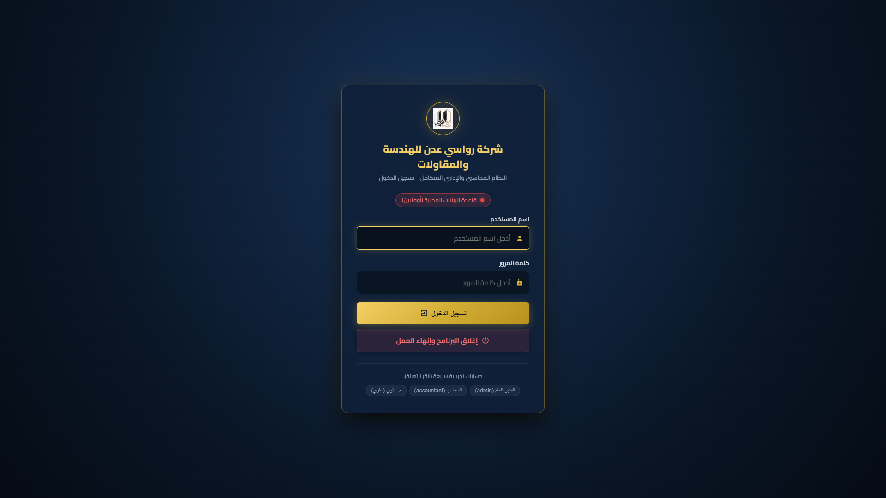
🎯 الهدف الوظيفي من الشاشة:
تأمين النظام ضد الدخول غير المصرح به، والتحقق من الجلسات النشطة، ومنع التكرار المتزامن للحسابات، مع توفير أزرار دخول سريع تجريبية وأزرار إغلاق آمن مع حفظ نسخة احتياطية فورية.
✨ أبرز المزايا المعروضة:
- تشفير كلمات المرور والربط المباشر مع جدول المستخدمين بقاعدة البيانات SQLite.
- فحص نبض الجلسة الدورية (Session Heartbeat) كل 25 ثانية لحماية النظام.
- أزرار دخول سريع للحسابات القيادية (المدير العام، المحاسب، المشرف الهندسي).
- زر إغلاق النظام مع أخذ نسخة احتياطية مشفرة وفورية للبيانات.
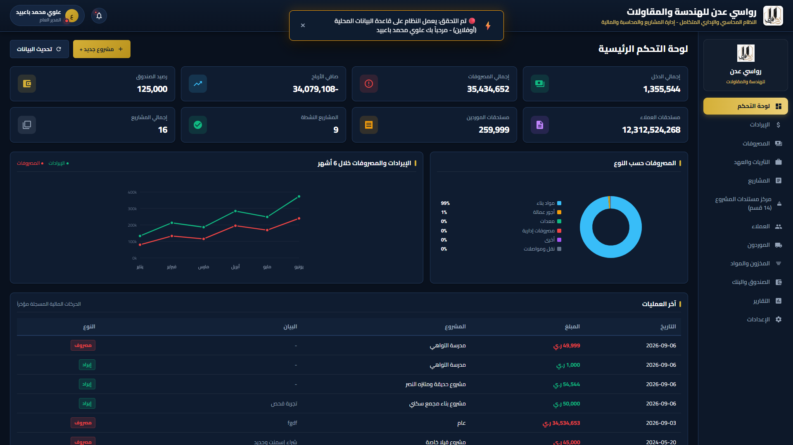
🎯 الهدف الوظيفي من الشاشة:
إعطاء الإدارة العامة والمدير التنفيذي نظرة بانورامية حية وشاملة لكافة الأرقام التشغيلية والمالية ومؤشرات أداء المشاريع في لمحة بصرية واحدة دون الحاجة للدخول في التفاصيل المعقدة.
✨ أبرز المزايا المعروضة:
- شبكة الـ 8 بطاقات الذكية: (إجمالي الدخل، إجمالي المصروفات، صافي الأرباح، رصيد الصندوق، مستحقات العملاء، مستحقات الموردين، المشاريع النشطة، ونسب الإنجاز).
- رسم بياني دائري تفاعلي (Donut Chart) يوضح توزيع المصروفات حسب التصنيف والنسبة المئوية.
- رسم بياني خطي لمسار التدفقات النقدية (الإيرادات والمصروفات) عبر الأشهر السابقة.
- جدول المعاملات والمستندات الموقعية والمالية الحديثة فور حدوثها في الموقع.
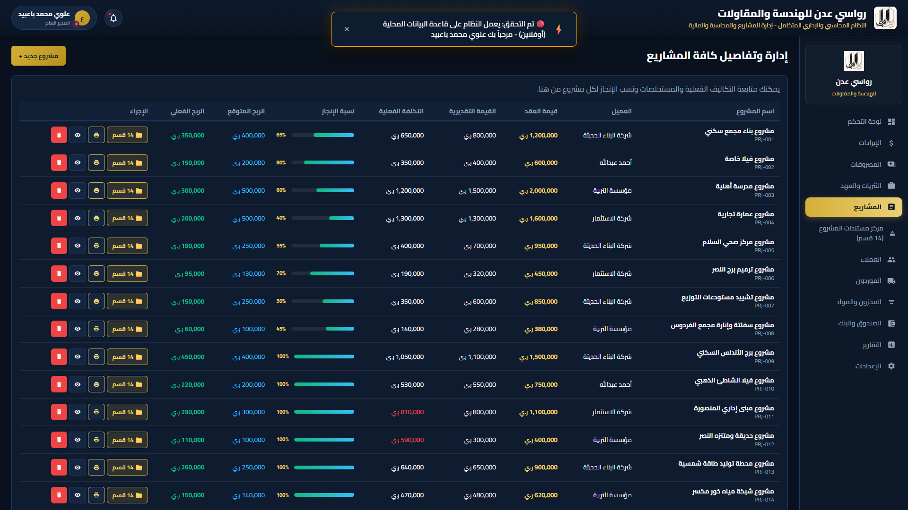
🎯 الهدف الوظيفي من الشاشة:
المتابعة المركزية للمشاريع الإنشائية المسجلة بالشركة، رصد نسب الإنجاز التراكمية، ومقارنة التكلفة التقديرية بالتكلفة الفعلية وحساب الأرباح المحققة مع الوصول المباشر لمركز مستندات كل مشروع.
✨ أبرز المزايا المعروضة:
- بطاقات ملخص المشاريع النشطة، المكتملة، وإجمالي قيمة العقود التراكمية بالريال السعودي.
- شريط تقدم الإنجاز لكل مشروع بنسب مئوية ملونة ومحسوبة تلقائياً.
- زر الوصول الفوري لمركز مستندات المشروع الـ 14 قسماً (زر 📁 14 قسم).
- إمكانية طباعة تقرير حساب وبيانات المشروع الرسمي بضغطة زر واحدة.
🎯 الهدف الوظيفي من الشاشة:
الأرشيف الهندسي والرقمي المتكامل للمشروع، يجمع كافة المعاملات والمستندات القانونية والفنية والمالية للمشروع تحت مظلة واحدة لضمان عدم ضياع أي مستند وسرعة مراجعة لجان الفحص والمالك.
✨ أبرز المزايا المعروضة:
- 14 قسماً تخصصياً يغطي دورة حياة المشروع من توقيع العقد حتى المخالصة والحساب الختامي.
- عداد حيّ لكل قسم يوضح عدد المستندات والملفات المرفوعة بداخله.
- إمكانية تصدير تقرير شامل لكافة وثائق ومستندات المشروع بملف واحد.
- ربط مباشر مع قاعدة بيانات المشاريع لتحديث المعاملات تلقائياً.
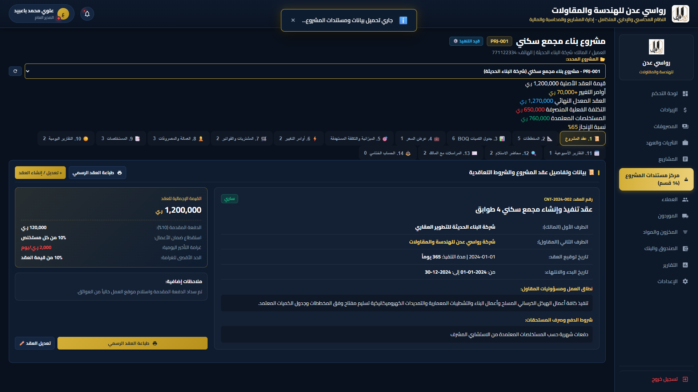
🎯 الهدف الوظيفي من الشاشة:
توثيق العقد الأساسي للمشروع، رقم العقد، تاريخ التوقيع، تاريخ البدء والانتهاء، الشروط الجزائية، وغرامات التأخير، مع رفع نسخة PDF ممسوحة ضوئياً من العقد الأصلي المختوم.
✨ أبرز المزايا المعروضة:
- تسجيل القيمة التعاقدية الأصلية للمشروع مع تحديد نسبة ومبلغ الدفعة المقدمة.
- بيانات المالك، الاستشاري الهندسي المشرف، والممثل القانوني للطرفين.
- معاينة وتحميل ملف العقد المعتمد بضغطة زر.
- متابعة التزامات الطرفين القانونية وفترات الضمان والصيانة.
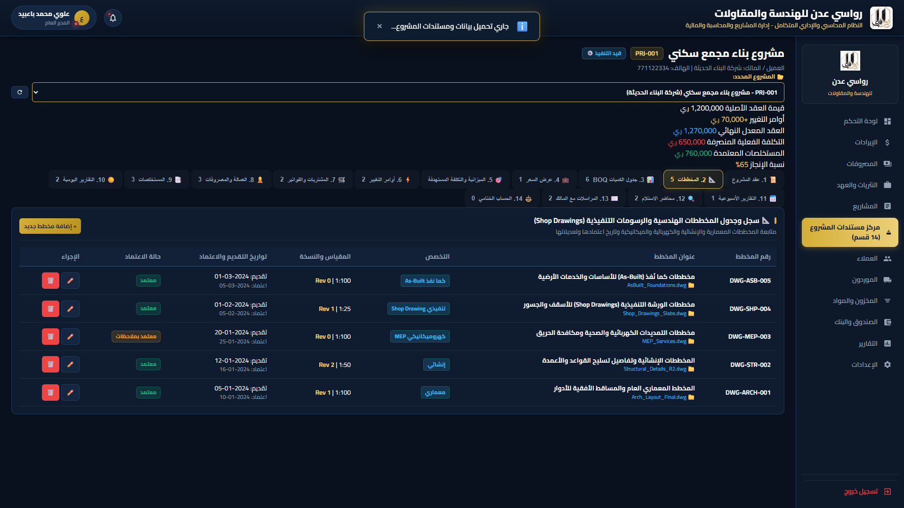
🎯 الهدف الوظيفي من الشاشة:
أرشفة وتصنيف كافة المخططات الهندسية للمشروع (معمارية، إنشائية، كهربائية، صحية، ميكانيكية، ومخططات As-Built) مع تتبع أرقام الإصدارات والمراجعات المعتمدة من الاستشاري.
✨ أبرز المزايا المعروضة:
- تصنيف المخطط حسب التخصص (معماري، إنشائي، كهروميكانيكي MEP).
- تتبع رقم المراجعة والتعديل (Rev 01, Rev 02) وتاريخ الاعتماد.
- حفظ وتنزيل المخططات بصيغ PDF و CAD عالية الوضوح.
- منع استخدام المخططات القديمة والملغاة في الموقع الميداني.
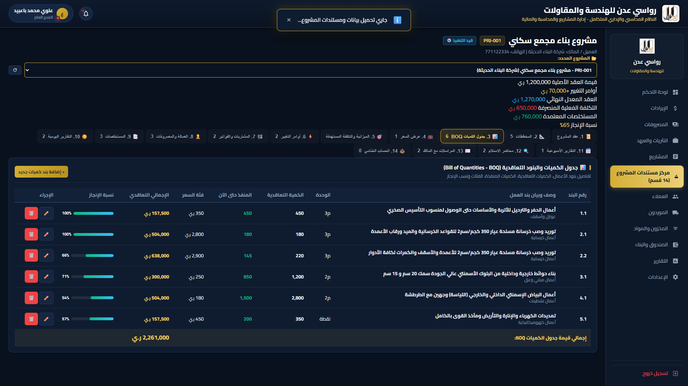
🎯 الهدف الوظيفي من الشاشة:
إدارة ومتابعة بنود جدول الكميات المعتمدة في العقد، حصر الكميات التعاقدية مقابل المنفذة فعلياً، وتتبع سعر الوحدة وإجمالي كل بند مع حساب نسب الإنجاز التراكمية.
✨ أبرز المزايا المعروضة:
- جدول تفصيلي يتضمن: رقم البند، الوصف الدقيق، الوحدة، الكمية التعاقدية، الكمية المنفذة، وسعر الوحدة.
- حساب تلقائي لقيمة المنجز والمتبقي ونسبة الإنجاز لكل بند على حدة.
- تصدير واستيراد جدول الكميات من وإلى جداول Excel لسهولة التسعير.
- الربط التلقائي مع المستخلصات الجارية (IPC) لحساب قيم الأعمال المنجزة.
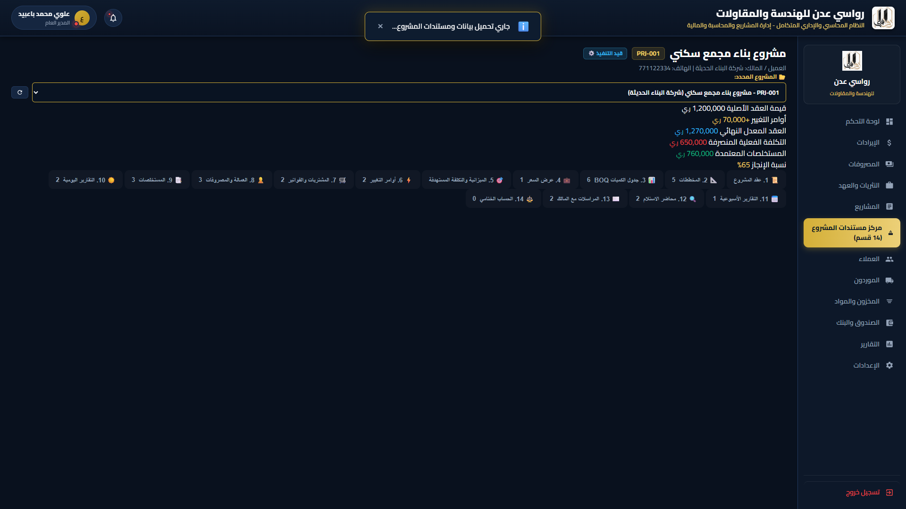
🎯 الهدف الوظيفي من الشاشة:
رصد وتوثيق أي طلبات لتعديل الأعمال أو إضافة بنود جديدة خارج نطاق العقد الأصلي، وتحديد الأثر المالي والزمني المترتب عليها، ومتابعة حالة اعتمادها من المالك والاستشاري.
✨ أبرز المزايا المعروضة:
- تسجيل وصف أمر التغيير، جهة الطلب (المالك / الاستشاري)، والسبب الفني.
- تحديد القيمة المالية الإضافية وتمديد المدة الزمنية الممنوحة (بالأيام).
- متابعة حالة الاعتماد (معتمد Approved، قيد الدراسة Under Review، مرفوض Rejected).
- إضافة التكلفة المعتمدة تلقائياً إلى القيمة التعاقدية المعدلة للمشروع.
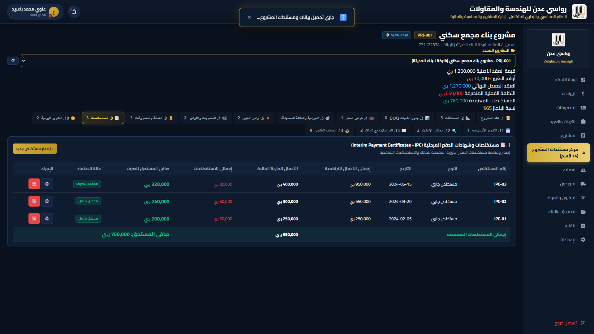
🎯 الهدف الوظيفي من الشاشة:
إصدار ومتابعة المستخلصات الدورية عن الأعمال المنفذة بالمشروع، واحتساب الاستقطاعات النظامية (استرداد الدفعة المقدمة، محتجز الضمان 5-10%) وإصدار صافي المبلغ المستحق للصرف.
✨ أبرز المزايا المعروضة:
- إصدار مستخلص دوري تراكمي (سابق، حالي، إجمالي حتى تاريخه).
- حساب آلي لخصم الدفعة المقدمة ونسبة محتجز حسن التنفيذ (Retention).
- متابعة تواريخ الإرسال، وتاريخ اعتماد الاستشاري، وحالة السداد الفعلي.
- الربط المباشر مع حركة المقبوضات وتحديث ذمة العميل تلقائياً.
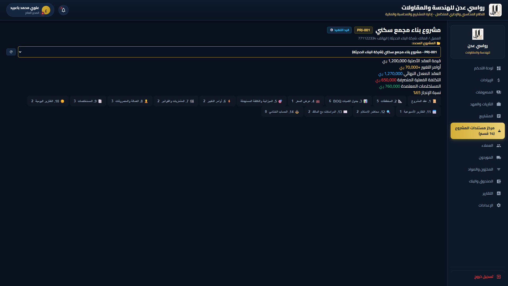
🎯 الهدف الوظيفي من الشاشة:
التوثيق اليومي الدقيق لكافة مجريات العمل في الموقع الإنشائي (الطقس، العمالة المداومة، المعدات العاملة والمتعطلة، بنود الأعمال المنجزة، المعوقات والمواد الموردة).
✨ أبرز المزايا المعروضة:
- تسجيل حالة الطقس ودرجات الحرارة وأثرها على صب الخرسانة.
- حصر كادر الموقع: أعداد المهندسين، الفنيين، والعمالة الحرفية واليومية.
- رصد حركات تشغيل المعدات وساعات عملها وساعات التوقف والأعطال.
- توثيق المعوقات الميدانية التي قد تؤدي لطلب تمديد زمني للمشروع.
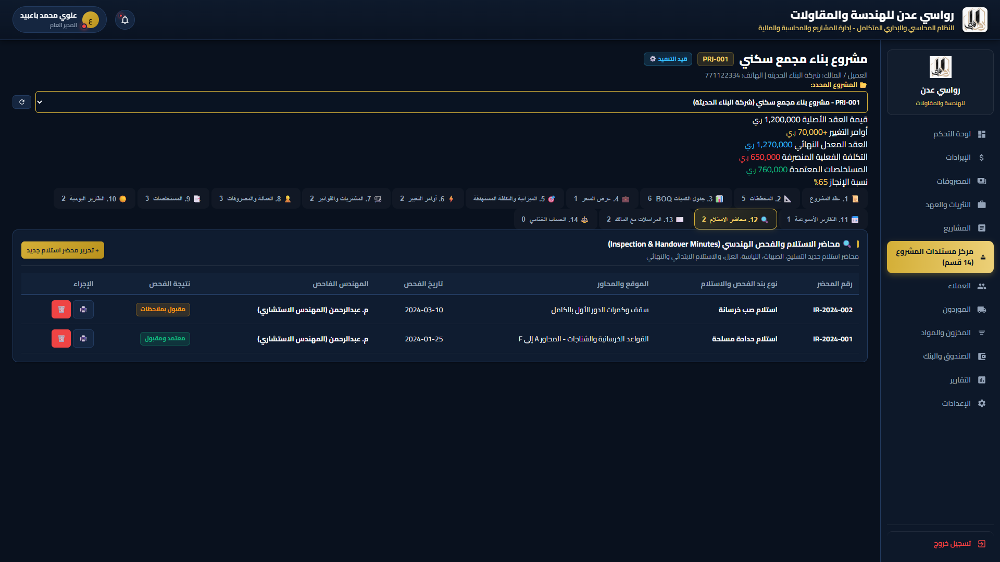
🎯 الهدف الوظيفي من الشاشة:
توثيق محاضر استلام الأعمال ومطابقة الجودة (Work Inspection Requests - WIR) المعتمدة من المهندس المشرف، مثل استلام حديد التسليح، استلام النجارة، نتائج كسر مكعبات الخرسانة، ومحاضر الاستلام الابتدائي والنهائي.
✨ أبرز المزايا المعروضة:
- تسجيل تاريخ ورقم طلب الفحص مع العنصر الإنشائي وموقعه بالمشروع.
- حالة الاعتماد وتوقيع المهندس المشرف وملاحظات الاستشاري إن وجدت.
- أرشفة تقارير المختبر وفحوصات الضغط للخرسانة وقوة الشد للحديد.
- حفظ محاضر الاستلام الابتدائي والنهائي الرسمية للمشروع.
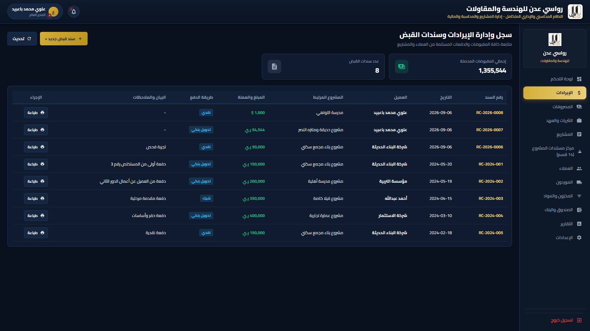
🎯 الهدف الوظيفي من الشاشة:
تسجيل ومتابعة كافة الدفعات المستلمة من الملاك والعملاء عن مستخلصات وأعمال المشاريع، وإصدار سندات قبض رسمية معتمدة مع تحديث ذمم العملاء ورصيد الخزينة آلياً.
✨ أبرز المزايا المعروضة:
- سجل كامل لسندات القبض يتضمن رقم السند، التاريخ، العميل، المشروع، والمبلغ وطريقة الدفع.
- دعم تعدد العملات المعتمدة بالمشروع (الريال اليمني، الريال السعودي، والدولار الأمريكي).
- زر طباعة سند قبض فوري بنموذج رسمي موثق خالي تماماً من الخلفيات المشوهة.
- تحديث فوري وتلقائي لمديونيات العملاء والمبالغ المتبقية في ذمتهم بقاعدة البيانات.
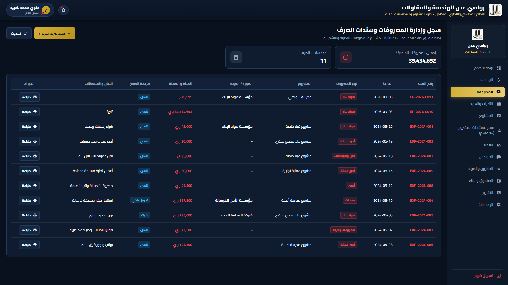
🎯 الهدف الوظيفي من الشاشة:
إدارة وتصنيف كافة النفقات التشغيلية والموقعية، وربط كل مصروف بمشروعه وبنده المحاسبي المحدد، مع طباعة سندات الصرف المعتمدة بالتواقيع والأختام الرسمية.
✨ أبرز المزايا المعروضة:
- تصنيف ذكي للمصروفات (مواد بناء، خرسانة، أجور عمالة، تأجير معدات، نثريات، محروقات).
- الربط المباشر بالتكلفة الفعلية للمشروع فور إصدار سند الصرف واحتسابه ضمن تقرير الربحية.
- إصدار سند صرف رسمي (Payment Voucher) بالتفقيط التلقائي واسم المستفيد وتوقيع المدير.
- خصم تلقائي من رصيد الصندوق أو البنك لمنع تسجيل أي عجز نقدي غير برر.
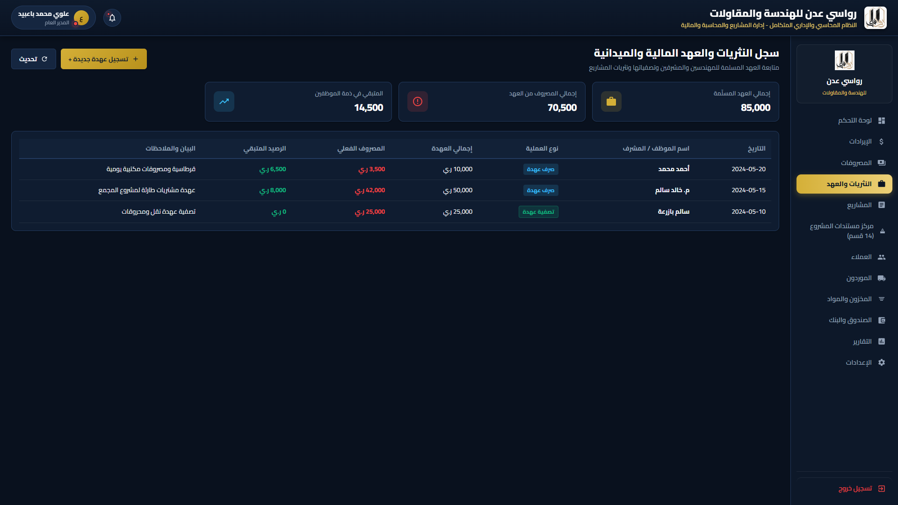
🎯 الهدف الوظيفي من الشاشة:
متابعة وتصفية العهد النقدية المسلمة لمهندسي المواقع والمشرفين الميدانيين للنفقات اليومية العاجلة، مع حساب المنصرف منها والمتبقي بدقة متناهية لمنع تراكم المعلقات.
✨ أبرز المزايا المعروضة:
- بطاقات ملخص العهدة الميدانية: (إجمالي المسلم، إجمالي المنصرف، والمتبقي الفعلي في حوزة المهندس).
- سجل تفصيلي لحركات صرف العهد مصنفة حسب المهندس أو المشرف الميداني والمشروع.
- سهولة إجراء تصفية العهدة وإغلاقها وإعادتها للصندوق أو تدويرها لفترة جديدة.
- دعم كامل لكافة العملات المتداولة مع إرفاق الفواتير والإيصالات الميدانية.
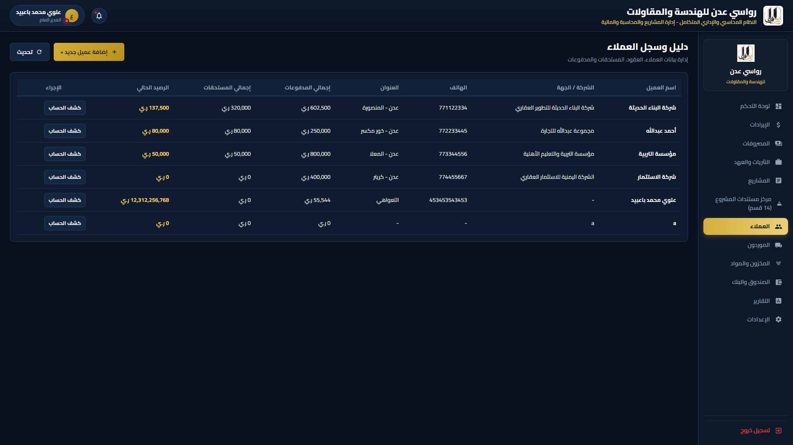
🎯 الهدف الوظيفي من الشاشة:
دليل كامل لبيانات الملاك والعملاء، متابعة المبالغ المستحقة عليهم والمسددة، مع إمكانية استخراج كشف حساب عميل تفصيلي رسمي معتمد للمطابقة والتسوية المالية.
✨ أبرز المزايا المعروضة:
- سجل تفصيلي للعملاء مع أرقام الهواتف، العناوين، الشركات، والأرصدة المدينة والدائنة الحالية.
- كشف حساب عميل ديناميكي برصيد تراكمي مستمر بعد كل دفعة أو فاتورة.
- إظهار الرصيد الافتتاحي السابق، إجمالي المدفوعات، والمتبقي النهائي بدقة عالية.
- حقول مخصصة لمطابقة وتوقيع العميل والختم الرسمي للشركة للمصادقات الدورية.
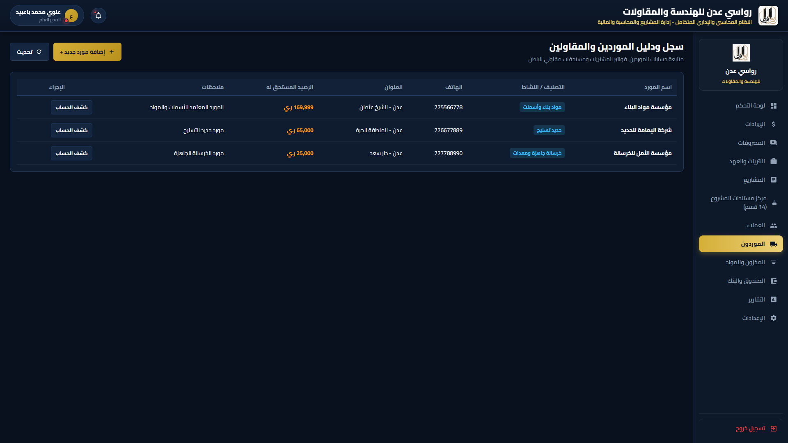
🎯 الهدف الوظيفي من الشاشة:
إدارة شبكة موردي مواد البناء (حديد، أسمنت، خرسانة جاهزة، أدوات كهربائية، تأجير معدات ثقيلة)، وتتبع فواتير التوريد والأرصدة المستحقة لهم وجدولة السداد.
✨ أبرز المزايا المعروضة:
- تصنيف الموردين حسب تخصص المواد وأرقام الهواتف والحسابات البنكية.
- متابعة دقيقة للأرصدة المستحقة لكل مورد لتجنب تأخير المستحقات أو ازدواجية السداد.
- كشف حساب مورد يوضح فواتير الشراء وسندات الصرف المسددة والرصيد المتبقي.
- المساعدة في التفاوض مع الموردين للحصول على أفضل التسهيلات الائتمانية والأسعار التنافسية.
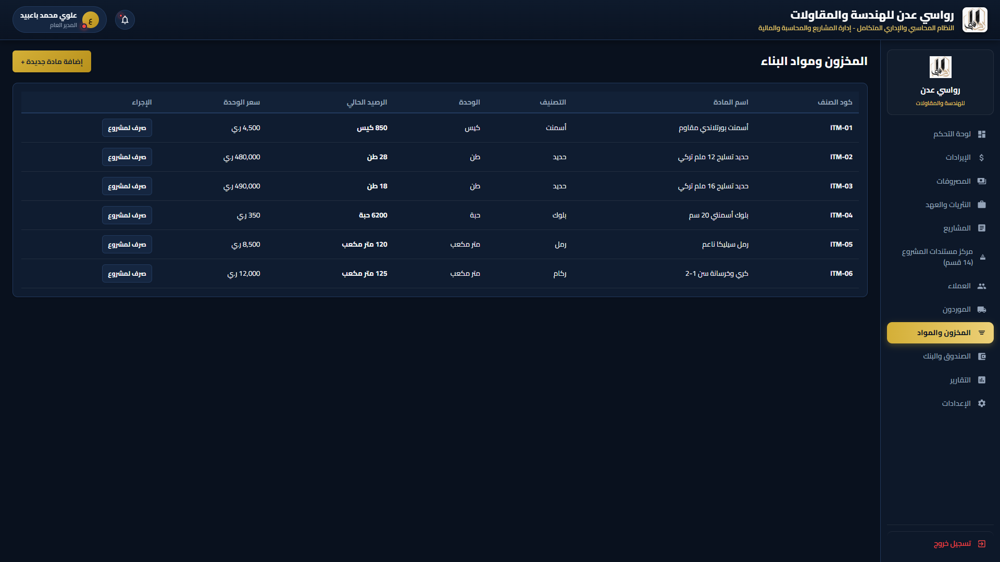
🎯 الهدف الوظيفي من الشاشة:
متابعة حركة المواد الإنشائية في المستودع المركزي أو الميداني، تسجيل أذونات الصرف للمشاريع، ومراقبة الحدود الدنيا للتنبيه بنواقص المواد قبل نفادها من الموقع.
✨ أبرز المزايا المعروضة:
- سجل أصناف مواد البناء بوحدات القياس المعيارية (طن، كيس، متر مكعب، متر طولي، حبة).
- نظام تنبيهات تلقائية لنواقص المخزون (Low Stock Alerts) عند وصول الصنف للحد الأدنى.
- إصدار أذونات صرف مواد مخزنية وتحميل تكلفتها على المشروع فوراً وخصمها من الرصيد.
- رصد حركات التوريد والصرف والتحويل مع تسجيل اسم المستلم الميداني لكل إرسالية.
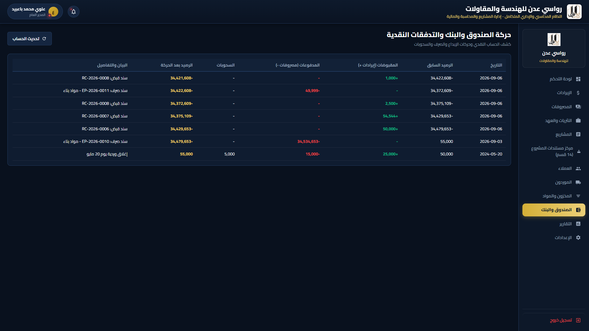
🎯 الهدف الوظيفي من الشاشة:
التدقيق اليومي في حركة النقدية الداخلة والخارجة من الخزينة وحسابات البنوك، وإجراء المطابقة الحسابية بين الرصيد الدفتري للنظام والرصيد الفعلي في الدرج أو الحساب البنكي.
✨ أبرز المزايا المعروضة:
- البطاقات الخماسية الحية: (الرصيد الافتتاحي، إجمالي الداخل، إجمالي المنصرف، المسحوبات، والرصيد الحالي).
- سجل تفصيلي لحركات الصندوق بتسلسل زمني دقيق وأرقام السندات المرتبطة بكل حركة.
- تسجيل التغذية والسحوبات والتحويلات بين الصندوق والبنوك بكل سهولة.
- نظام رقابي صارم يمنع أي عجز نقدي أو تلاعب في الأرصدة الحقيقية.
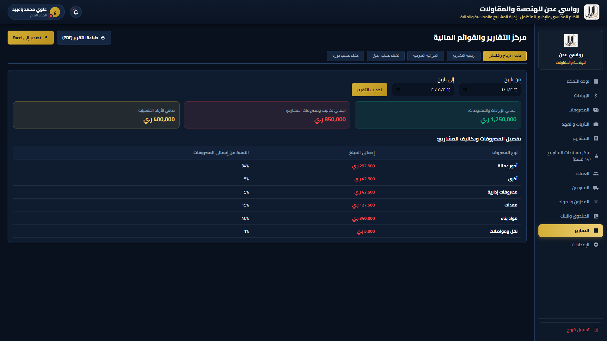
🎯 الهدف الوظيفي من الشاشة:
استخراج قائمة الدخل الرسمية التفاعلية للشركة خلال فترات زمنية محددة (شهرية، ربع سنوية، سنوية)، مع توزيع المصروفات واحتساب صافي الأرباح التشغيلية المحققة بدقة متناهية.
✨ أبرز المزايا المعروضة:
- تحديد الفترة المالية من تاريخ إلى تاريخ مع احتساب فوري وتلقائي للنتائج.
- جدول تفصيلي لتحليل نسب بنود المصروفات وتأثير كل بند على صافي هامش الربح.
- تصدير التقرير المالي إلى ملفات Excel تدعم اللغة العربية (UTF-8) بالكامل.
- إمكانية طباعة التقرير بنموذج معتمد متعدد الصفحات مع إظهار توقيع المحاسب والمدير العام.
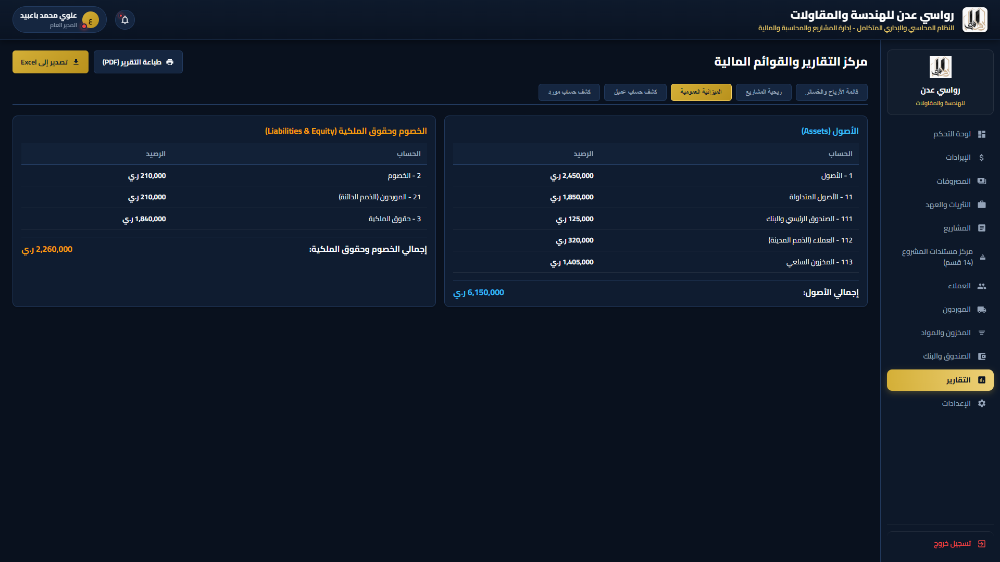
🎯 الهدف الوظيفي من الشاشة:
عرض الميزانية العمومية التفاعلية التي توضح أصول الشركة المتداولة والثابتة مقابل التزاماتها ومستحقات الموردين وحقوق الملكية للوقوف على الملاءة المالية الحقيقية للمؤسسة.
✨ أبرز المزايا المعروضة:
- جدول مقارنة الأصول والالتزامات جنباً إلى جنب (Dual Balance Table) وفق المعايير المحاسبية.
- رصد النقدية، وقيمة المخزون، والمستحقات على العملاء كأصول متداولة حية.
- رصد مستحقات الموردين والعهد والالتزامات كديون قائمة واجبة السداد.
- إمكانية طباعة تقرير المركز المالي بنموذج رسمي معتمد للاستخدام البنكي والتمويلي.
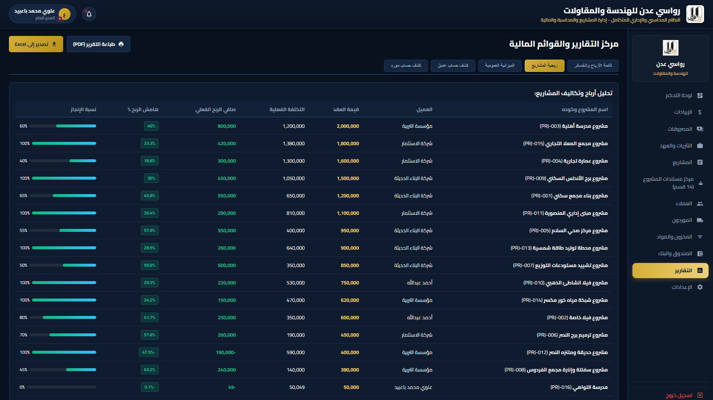
🎯 الهدف الوظيفي من الشاشة:
مقارنة ومفاضلة الجدوى والأرباح المحققة بين المشاريع الـ 16 المختلفة، وتحديد أي المشاريع تحقق أعلى هامش ربح وأيها يستهلك تكاليف إضافية خارج المخطط المالي.
✨ أبرز المزايا المعروضة:
- جدول مقارنة تفصيلي يتضمن: (قيمة العقد، التكلفة الفعلية، الربح المحقق، وهامش الربح %).
- تقييم كفاءة مهندسي المواقع وإدارتهم الذكية لميزانية المشروع المعتمدة.
- تصدير بيانات الكفاءة والربحية إلى ملفات Excel بضغطة زر واحدة.
- كشف المشاريع المتعثرة أو منخفضة الربح لاتخاذ إجراءات تصحيحية عاجلة.

🎯 الهدف الوظيفي من الشاشة:
إدارة وضبط البيانات الرسمية لشركة رواسي عدن للهندسة والمقاولات (اسم الشركة باللغتين العربية والإنجليزية، السجل التجاري، الرقم الضريبي، أرقام التواصل، وشعار الشركة الرسمي).
✨ أبرز المزايا المعروضة:
- رفع وتعديل شعار الشركة (Logo) ليظهر تلقائياً في كافة الترويسات والسندات المطبوعة.
- تعديل العنوان، أرقام الهاتف، والبريد الإلكتروني ومقر الشركة الرئيسي في عدن.
- حفظ إعدادات العملة الافتراضية للنظام والنسب الضريبية المعمول بها.
- الحفظ الفوري للإعدادات في قاعدة البيانات مع انعكاسها الفوري على كل شاشات النظام.
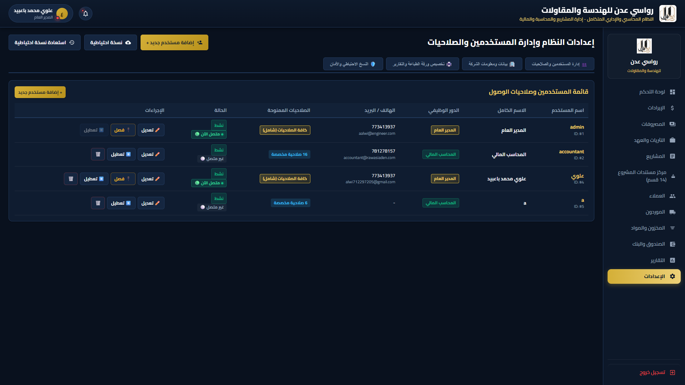
🎯 الهدف الوظيفي من الشاشة:
التحكم الكامل في تصميم وطباعة السندات والتقارير وكشوف الحسابات عبر شاشة معاينة حية فورية تُظهر شكل المستند كما سيخرج من الطابعة، مع إزالة أي خلفيات مشوهة وضمان دقة المحاذاة.
✨ أبرز المزايا المعروضة:
- شاشة معاينة تفاعلية حية تتبدل بين سندات القبض، وسندات الصرف، وكشوف الحسابات والتقارير.
- التحكم في قياس الهوامش، نمط الحدود، الخطوط الرسمية، والألوان الملكية المتناسقة.
- إدراج اسم المستخدم المسجل بالمشروع وتوقيت الطباعة الدقيق في ترويسة وتذييل كل ورقة.
- التحكم الكامل بمواقع التواقيع والأختام الرسمية المعتمدة لشركة رواسي عدن.

🎯 الهدف الوظيفي من الشاشة:
التحكم في كادر العمل، إنشاء حسابات الموظفين (مهندس، محاسب، مدير مشروع، مدير عام)، وتخصيص صلاحيات الوصول لكل شاشة وقسم لمنع أي تجاوزات إدارية أو مالية.
✨ أبرز المزايا المعروضة:
- جدول المستخدمين مع بيان المسمى الوظيفي، الحالة (نشط / معطل)، وآخر موعد دخول.
- تحديد صلاحيات دقيقة: صلاحية العرض، الإضافة، التعديل، والحذف لكل شاشة وقائمة.
- تغيير وتشفير كلمات المرور وإعادة ضبطها بأمان تام.
- سجل التدقيق الداخلي (Audit Log) لتتبع من قام بإدخال أو تعديل أي حركة مالية أو هندسية.